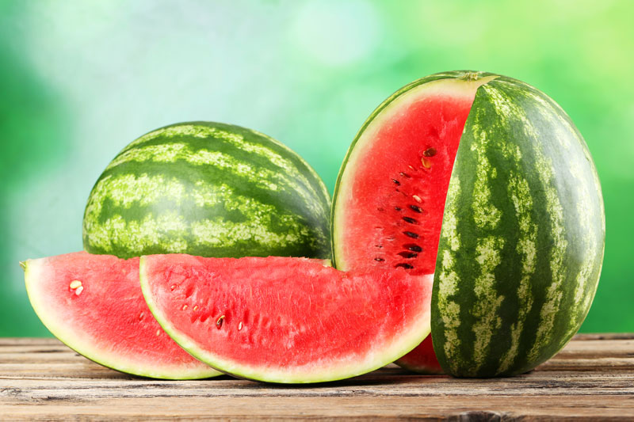

The watermelon (Citrullus lanatus) is a flowering plant species in the family Cucurbitaceae. It is a vine-like plant cultivated worldwide in tropical and temperate regions for its large, sweet fruit.

Modern watermelons originated in Sudan, where they were first domesticated. Today, they are enjoyed globally as a refreshing summer treat consisting of over 91% water.
Read the full article